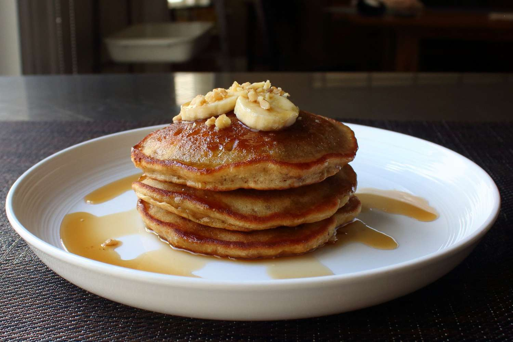

Banana Bread Pancakes

If you're a fan of our banana bread, then you're gonna love this, since it's based on that recipe. As easy as that is to make, these are even easier. I really think that this threads the needle between something that has the flavor of banana bread, but that is very close to the texture of a classic pancake. Top with butter and banana slices and serve with warm maple syrup.
Ingredients:
- flour
- banana
- baking soda/powder
- sugar
- banana
- milk
- butter
- eggs
Steps
- Combine flour, salt, baking powder, and baking soda in a small bowl with a whisk. Reserve until needed
- Place banana in a mixing bowl and mash into a smooth paste with a potato masher. Add egg and sugar and whisk thoroughly until sugar is dissolved and mixture is smooth and creamy, about 2 minutes. Add milk, vanilla extract, 1/4 cup melted butter, walnuts, and flour mixture. Whisk until just combined.
- Let batter rest for 10 minutes.
- Melt 1 tablespoon butter in a large, nonstick pan or skillet over medium-high heat. Once the pan is hot, transfer in about 1/3 cup of the batter per pancake. Reduce heat to medium and cook until edges start to look dry and small air bubbles pop up through the surface, about 3 minutes. Flip and cook until golden brown, about 3 minutes more. Serve immediately.
Home